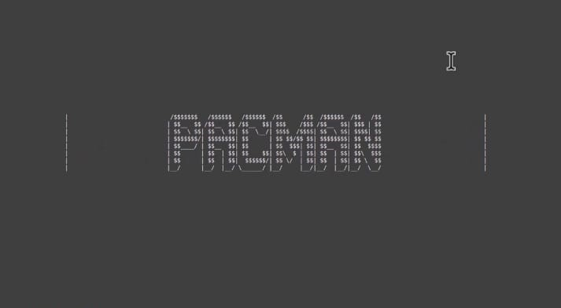

WHO AM I?
My name is Benjamin Jun-jie Glover and I'm an insatiable learner with a fierce passion for all things computer science. I'm a proud code-a-holic and algorithm aficionado, constantly on the lookout for new challenges and mind-bending puzzles to solve.As a student of the digital age, I've fallen head over heels for the limitless potential of technology. From exploring the depths of artificial intelligence to unearthing the secrets of quantum computing, my curiosity knows no bounds. In addition to my love for computer science, I also have a penchant for creative problem-solving and critical thinking. I'm an active participant in hackathons and programming competitions, where I relish the opportunity to brainstorm innovative solutions as part of a team. But my journey doesn't end there! I'm constantly seeking to expand my horizons and grow as a person. Outside the realm of computer science, I enjoy exploring other fields such as philosophy, psychology, and even creative writing. To me, life is an ever-evolving quest for knowledge, and I'm excited to see where it takes me next.
My Skills
My Projects
Whether it be for school or for my personal enjoyment, I am always building. I greatly enjoy building small apps and learning new things.

My Work Experience
I have worked in many different fields, spanning catering and kitchen, architectural design, and software engineering postions. Over the years I have become somewhat of a jack of all trades by developing skills in so many different areas.

Culinary Work Experience
Lobster Boss Ltd, Hong Kong
Yang Shu Ten, Niseko Japan
...
...
Yang Shu Ten, Niseko Japan
...
...
February 2023 – May 2023
Located in SOGO causeway bay, I worked in a small kiosk preparing, cooking, and serving dishes to customers while also handling orders. This experience aided my teamworking skills because I was required to work closely with 1-2 coworkers in a tight enclosed kitchen while under stressful situations. It was imperative that effective communication be achieved to allow for high quality customer service.Yang Shu Ten, Niseko Japan
November 2022 – February 2023
This winter experience has played a pivotal role in my personal development and marks ......
...
Yang Shu Ten, Niseko Japan
November 2022 – February 2023
This winter experience has played a pivotal role in my personal development and marks ......
...

Architectural Work Experience
3rd Lead8 internship, Hong Kong
2nd Lead8 internship, Hong Kong
1st Lead8 internship, Hong Kong
November 2022 – December 2022
During this internship, I was tasked with developing the interior of a large mall project. I focused on developing high quality interior lighting and reflections, as well as scripting the camera properties and paths. Similar to the previous internship projects, I used a mixture of Unreal Engine, and 3Ds Max.2nd Lead8 internship, Hong Kong
June 2022 – October 2022
This is the largest architectural project I collaborated. During this project I was tasked with a multitude of jobs. To name a few, I was required to place and animate all props and people, develop both interior and exterior lighting and reflections, and realistaclly animate vehicles such as cars and trains.1st Lead8 internship, Hong Kong
June 2021 – August 2021
My first internship was more of a learning endeavour than a job. I learned how to use a wide range of software such a modeling in blender and 3Ds Max, and animating in 3Ds max.